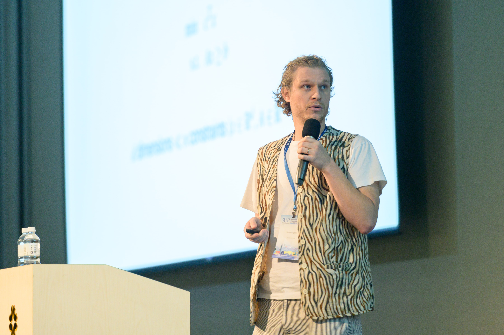

Simon Apers

smgapers at gmaildotcom
CNRS researcher at IRIF (Université Paris Cité)
focus on quantum algorithms. broader interest in theoretical computer science (random walks, graph theory, combinatorial optimization)
editor for the journal Quantum. PC member for QIP'25, TQC'23, SODA'23, ESA '21
lecture notes: Sorbonne (2022-...), MPRI (2021-...), Bad Honnef (2022), tutorial slides (2023)
open positions for PhD students and postdocs: link
Simon Papers: google scholar (*: alphabetic ordering)
- S. Apers, F. Magniez, S. Sen, D. Szabó.*
"Quantum property testing in sparse directed graphs."
preprint. arXiv:2410.05001
- R. Edenhofer, S. Apers.
"Directed st-connectivity with few paths is in quantum logspace."
preprint. arXiv:2408.12473, slides
- S. Apers, S. Gribling, A. Sidford.*
"On computing approximate Lewis weights."
preprint. arXiv:2404.02881
- S. Apers, L. Miclo.*
"Quantum walks, the discrete wave equation and Chebyshev polynomials."
preprint. arXiv:2402.07809, slides
- D. Szabó, S. Apers.
"Holey graphs: very large Betti numbers are testable."
in 50th International Conference on Current Trends in Theory and Practice of Computer Science (SOFSEM '25). arXiv:2401.06109
- K.-C. Chen, S. Apers, M.-H. Hsieh.
"(Quantum) complexity of testing signed graph clusterability."
in Proceedings of 19th Conference on the Theory of Quantum Computation, Communication and Cryptography (TQC '24). arXiv:2311.10480
- S. Apers, S. Gribling.*
"Quantum speedups for linear programming via interior point methods."
preprint. arXiv:2311.03215, slides, video
accepted for QIP '24.
- S. Apers, S. Jeffery, G. Pass, M. Walter.*
"(No) Quantum space-time tradeoff for USTCON."
in 31st European Symposium on Algorithms (ESA '23). arXiv:2212.00094, slides
- S. Apers, S. Piddock.*
"Elfs, trees and quantum walks."
in 18th Conference on the Theory of Quantum Computation, Communication and Cryptography (TQC '23). arXiv:2211.16379, slides, video
- S. Apers, S. Sen, D. Szabó.*
"A (simple) classical algorithm for estimating Betti numbers."
in Quantum, 7 (1202), 2023.
in Quantum Computing Theory in Practice (QCTiP '23). arXiv:2211.09618, slides
- S. Apers, S. Gribling, D. Szilágyi.*
"Hamiltonian Monte Carlo for efficient Gaussian sampling: long and random steps."
in Journal of Machine Learning Research (JMLR), 25(348), 2024 link, arXiv:2209.12771
- S. Apers, Y. Efron, P. Gawrychowski, T. Lee, S. Mukhopadhyay, D. Nanongkai.*
"Cut query algorithms with star contraction."
in 63rd IEEE Symposium on Foundations of Computer Science (FOCS '22). arXiv:2201.05674, slides
- S. Apers, S. Chakraborty, L. Novo, J. Roland.*
"Quadratic speedup for spatial search by continuous-time quantum walk."
in Physical Review Letters (PRL), 129(16), 2022.
in 17th Conference on the Theory of Quantum Computation, Communication and Cryptography (TQC '22).
arXiv:2112.12746, slides, video
- S. Apers, P. Gawrychowski and T. Lee.*
"Finding the KT partition of a weighted graph in near-linear time."
in 25th Conference on Approximation Algorithms for Combinatorial Optimization Problems (APPROX '22). arXiv:2111.01378
- S. Apers, A. Auza and T. Lee.*
"A sublinear time quantum algorithm for s-t minimum cut on dense simple graphs."
preprint. arXiv:2110.15587
- F. Adriaens and S. Apers.*
"Testing properties of signed graphs."
in 2023 ACM Web Conference. arXiv:2102.07587
- A. Leverrier, S. Apers and C. Vuillot.
"Quantum XYZ product codes."
in Quantum, 6 (766), 2022. arXiv:2011.09746
- S. Apers and T. Lee.*
"Quantum complexity of minimum cut."
in Computational Complexity Conference (CCC '21) arXiv:2011.09823, video
accepted for QIP '21, merged with arXiv:1911.07306, slides
- S. Apers, A. Gilyén and S. Jeffery.*
"A Unified Framework of Quantum Walk Search."
in 38th Symposium on Theoretical Aspects of Computer Science (STACS '21)
arXiv:1912.04233, slides, video
- S. Apers and R. de Wolf.*
"Quantum Speedup for Graph Sparsification, Cut Approximation and Laplacian Solving."
in SIAM Journal on Computing 51 (6), 1703-1742, 2022.
in 61st IEEE Symposium on Foundations of Computer Science (FOCS '20) arXiv:1911.07306, slides, video
accepted for QIP '21, merged with arXiv:2011.09823
- S. Apers.
"Expansion Testing using Quantum Fast-Forwarding and Seed Sets."
in Quantum, 4 (323), 2020. arXiv:1907.02369, slides
- S. Apers.
"Quantum Walk Sampling by Growing Seed Sets."
in 27th European Symposium on Algorithms (ESA '19).
arXiv:1904.11446, slides
- S. Apers and A. Sarlette.*
"Quantum Fast-Forwarding: Markov Chains and Graph Property Testing."
in Quantum Information and Computation, 19(3&4):191-213, 2019.
arXiv:1804.02321
- S. Apers, A. Sarlette and F. Ticozzi.*
"Simulation of Quantum Walks and Fast Mixing with Classical Processes."
in Physical Review A, 98(3), 2018.
arXiv:1712.01609
- W.W. Zhang, B.C. Sanders, S. Apers, S.K. Goyal and D.L. Feder.
"Detecting Topological Transitions in Two Dimensions by Hamiltonian Evolution."
in Physical Review Letters (PRL), 119(19), 2017.
arXiv:1707.01839
- S. Apers, F. Ticozzi and A. Sarlette.
"Characterizing limits and opportunities in speeding up Markov chain mixing."
in Stochastic Processes and their Applications, 136:145-191, 2021.
arXiv:1705.08253
- S. Apers, A. Sarlette and F. Ticozzi.
"Bounding the Convergence Time of Local Probabilistic Evolution."
in 3rd International Conference on Geometric Science of Information (GSI '17).
arXiv:1711.06024, slides, video
- S. Apers and A. Sarlette.*
"Accelerating Consensus by Spectral Clustering and Polynomial Filters."
in IEEE Transactions on Control of Network Systems, 4(3), 2016.
arXiv:1503.01269
- S. Apers.
"Quantum Walks: Speed Limits on Mixing and Fast-Forwarding Classical Walks."
Ghent University, 2019. supervisor: Alain Sarlette.
pdf, slides. PhD thesis.